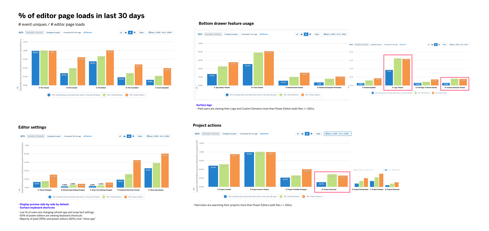
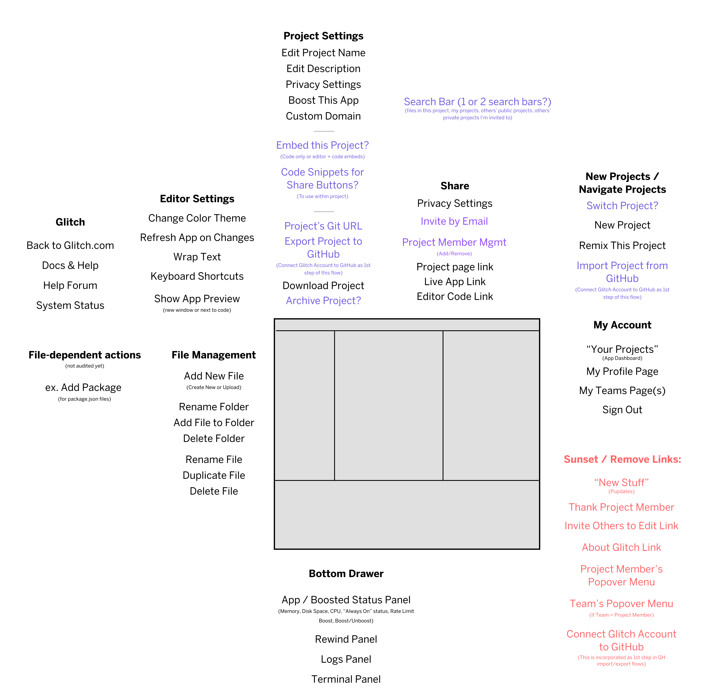
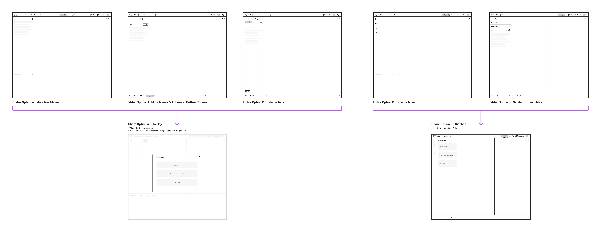
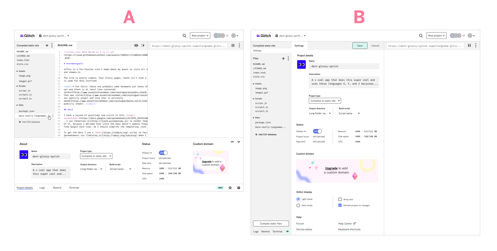
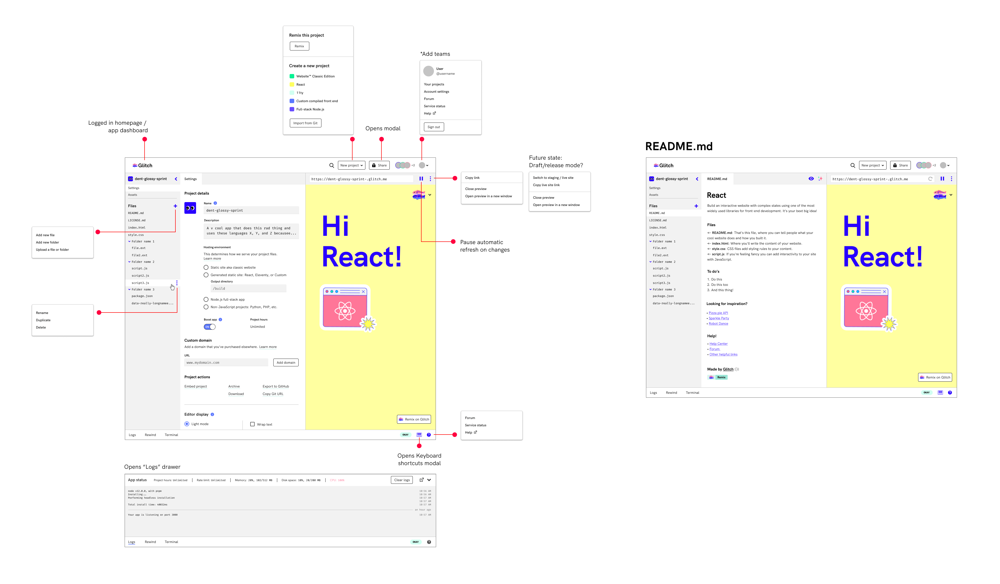

Code editor
Initiating a redesign of the core product
Design Discovery, Information Architecture, UX Design, Visual Design, Usability Testing
View FigmaGlitch is the friendly developer community and hosting platform where users can build and automatically deploy front-end and full-stack apps directly in the browser. While redesigning a private projects feature, I discovered significant usability issues in the code editor user interface and found that common developer workflows were cumbersome. I validated these pain points through user research and an analysis of usage data.
My main objectives were to improve the information architecture of menus and hierarchy of actions so users could intuitively find what they're looking for, and to make the product more futureproof by using design patterns with ample real estate so that we could easily add and test new features. In this redesign, I consolidated 55 buttons down to 5, reduced 15 menus with over 21 states down to 7, and streamlined the number of clicks in workflows such as importing GitHub projects and viewing console logs.
As the design lead, I was responsible for the user experience, visual design, and usability testing. Due to changes in executive leadership and the business strategy, this project was unfortunately descoped from the product roadmap.

Glitch's existing code editor

Usage data analysis comparing engaged user cohorts

Early information architecture grouping exercise

Initial wireframes while designing a private projects feature

UI design iterations: bottom drawer vs. full page for settings

Final design